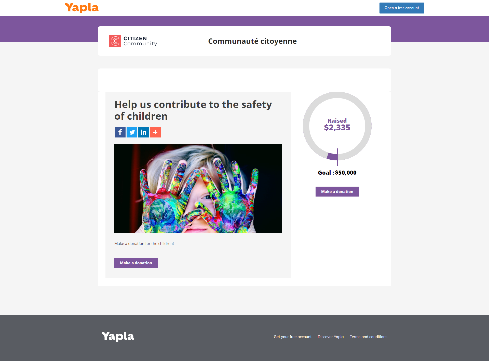
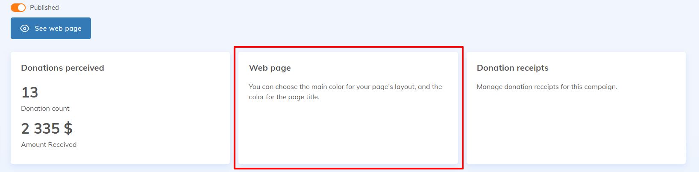
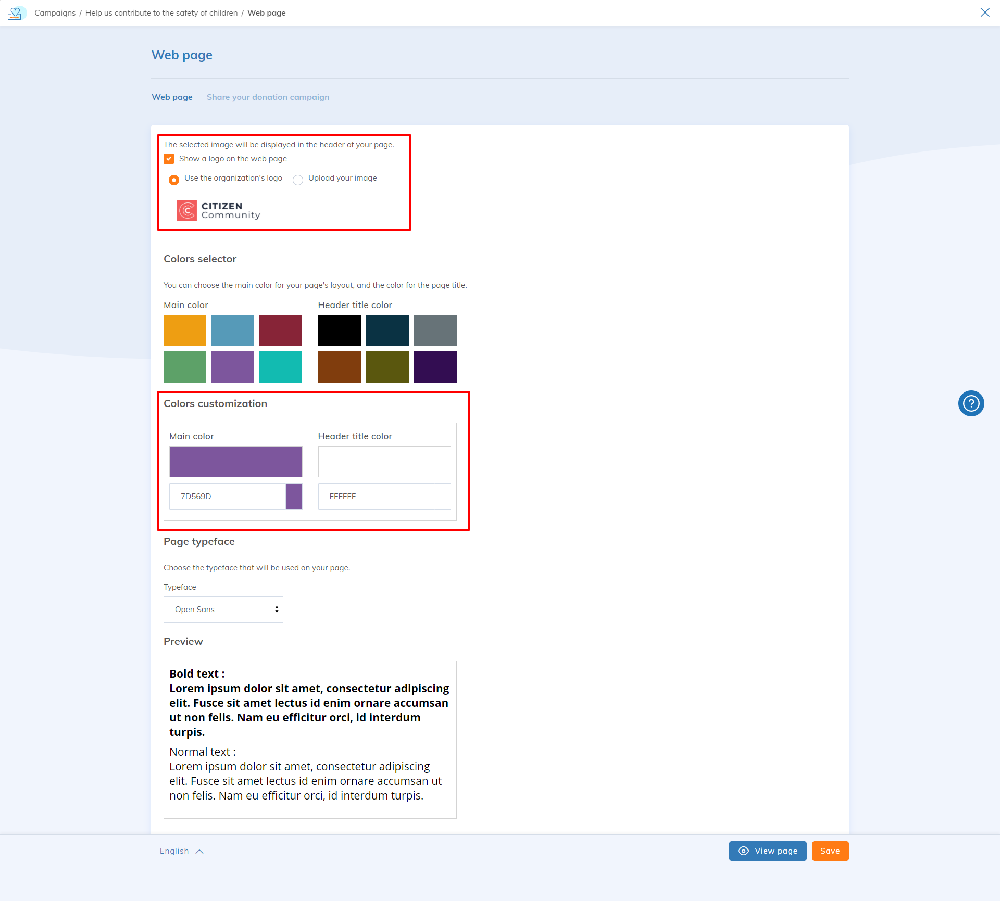
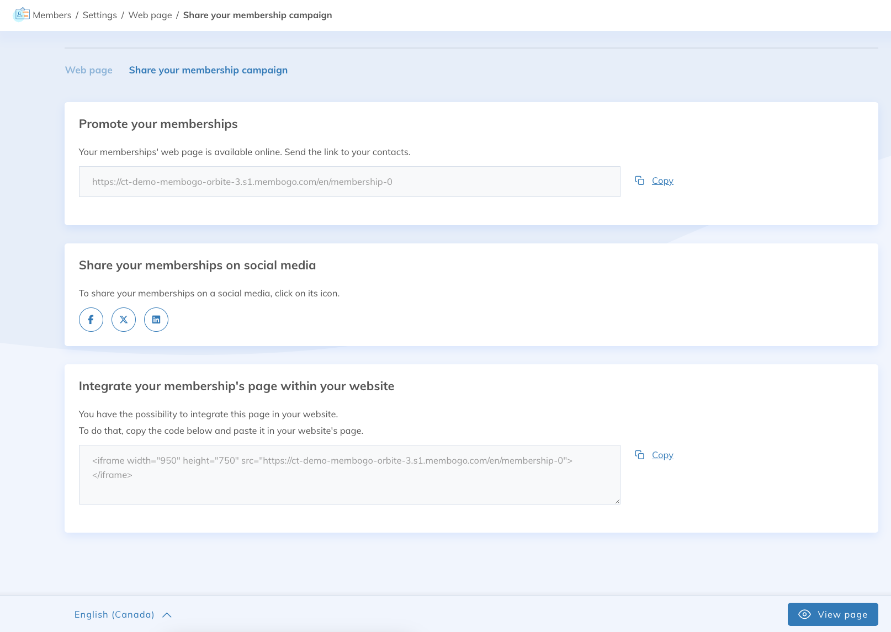
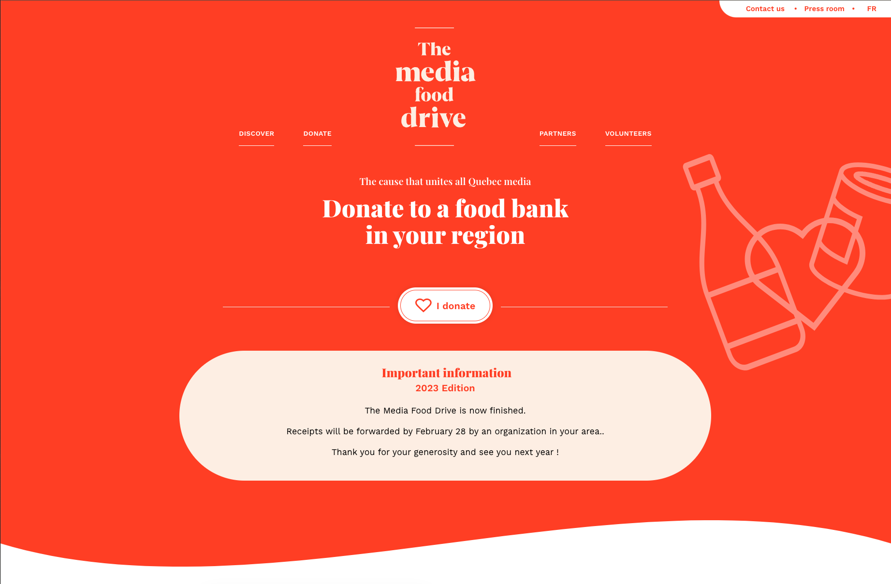

A single-page website in Yapla offers simple and fast navigation by grouping all content on a single page, ideal for specific membership or donation campaigns or events. These are useful if you haven't yet created a website with Yapla or if you already have an external website and want to redirect your visitors to specific actions that need to be performed in Yapla, such as making a donation or registering for an event.
In this article:
- What is a single-page website?
- What does a single-page website look like?
- How to customize and share my single-page website?
- FAQ
What is a single-page website?
Yapla offers, starting with the Free plan, a simple web page called a single-page website when you complete the creation of a membership, donation, or event campaign. It is a standard standalone web page automatically generated by Yapla so you can immediately share your campaigns or events with your community. For example, you can promote a donation campaign on a single-page website without creating a full website. While you can create a single-page website using the Yapla Websites feature, we are referring here to the automatically generated single pages by the platform!
What does this page look like?
A single-page website consists of a header styled by Yapla, a campaign or event section, and a footer. It allows interested people to take action, such as signing up or making payments for your campaigns and events. The link to this page can be shared in desired locations, such as a button on a website or in a newsletter.

How to customize and share my single-page website?
The creation of this page is automatically suggested at the penultimate step of creating a campaign or event. They are also accessible through the following features:
- Members > Settings > Web Page
- Events > Events > Select the relevant event > Web Page
- Donations > Campaigns > Select the relevant campaign > Web Page

Customize the single-page website
After navigating to the Web Page tile of the desired feature, you can access the customization settings. You can choose to display or not display a logo, either your organization's logo in Yapla or a new one.
You can also change the main color of the page and the font. This color is applied to the banner at the top of the page and to key elements of the campaign or event on the page, such as "Amount Raised," the donation thermometer, and "Donate" buttons.
To preview, click "View Page."

Share the single-page website
Navigate to the Sharing tab of your membership campaign (or donation or event campaign). You will find sharing options for your single-page website:
- Promote: This is the link to the single-page website that you can link to a button on any website or insert into a newsletter or other communications.
- Share on social media: You will be redirected to the selected social network. Log in with your association's account and share a post that includes the link to the single-page website.
- Embed the page within your website (not recommended): This option provides the HTML code to embed and display the entire single-page website via an iFrame on an external website (this option is not designed for websites built using the Yapla Websites feature).

FAQ
What are the differences between a single-page website and using Yapla Websites?
- Starting with the Essentials plan, Yapla offers the Yapla Websites CMS to design and manage your website directly on the platform. Single-page websites, on the other hand, can be used for free but have limited customization options.
- Yapla Websites allows you to create a complete website (including multiple customized pages) to showcase your association while taking full advantage of the platform's features.
- A website created with Yapla Websites is fully customizable. You and your collaborators can design a site that reflects your brand, adjust all site elements, and create additional pages, such as blogs, news, or presentations. Moreover, unlike single-page websites, your site will not contain a Yapla promotional banner at the top of the pages.
-
Yapla Websites enables complete customization of the structure, appearance, and content, as well as displaying multiple events or donation campaigns on the same page for a comprehensive view of your activities.
-
Yapla Websites also allows you to customize the member space and add member-only pages.
- For more details on the advantages and steps to configure a Yapla website, see our article How to easily create your website with Yapla.
Here is an example of a complete website created with Yapla Websites:

Why do you not recommend embedding single-page websites via iFrame?
iFrames can be unstable due to compatibility issues between browsers, security restrictions such as CORS (Cross-Origin Resource Sharing) that may block the content, or conflicts between the host site's CSS styles and scripts and those of the iFrame. Additionally, their content is not fully responsive, making mobile display challenging, and performance may be affected by slower loading times or errors due to external sources. These limitations make their use delicate for sensitive actions, such as payments or registrations.
I would like to consider the Yapla Websites feature; where should I start?
- Read the article How to easily create your website with Yapla
- Watch our tutorial video Setting up a website with Yapla (in french only)
- Explore our personalized training Create a basic transactional website

Comments
Please sign in to leave a comment.